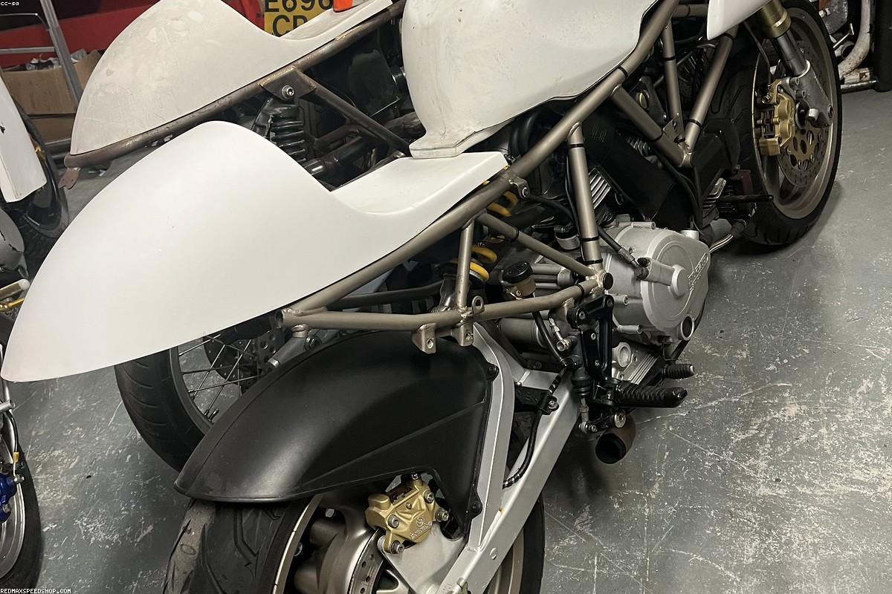

★★★★★
«Зашли с дочкой за мороженым, а остались на целый вечер. Пломбир — точь-в-точь из детства, а компот из сухофруктов вернул меня лет на тридцать назад. Тепло и уютно.»
Ретро-кафе с домашней кухней, пломбиром в вафельном стаканчике и молочными коктейлями. Тёплая ностальгия — по-новому.
«Весна» появилась в парке «Швейцария» как тёплое посвящение оттепели шестидесятых — времени мороженого в вафельных стаканчиках, эстрадных песен и неспешных прогулок по аллеям. Мы собрали интерьер из бабушкиных сервизов, кружевных скатертей и мятных оттенков, а в меню вернули вкусы, которые помнит каждый.
Здесь варят настоящий пломбир, ставят тесто на пироги с утра и подают чай в гранёных стаканах с подстаканниками. Приходите завтракать в одиночестве, обедать всей семьёй или просто посидеть на веранде, пока за окном шумят сосны парка. У нас по-домашнему — и в этом весь смысл.

«Зашли с дочкой за мороженым, а остались на целый вечер. Пломбир — точь-в-точь из детства, а компот из сухофруктов вернул меня лет на тридцать назад. Тепло и уютно.»
«Лучшие сырники в Нижнем, без преувеличений. Интерьер как из старого фильма, играет тихая эстрада. Идеальное место для неспешного завтрака после прогулки по парку.»
«Отмечали юбилей мамы — все были в восторге. Холодец, оливье, селёдка под шубой как дома, только вкуснее. Молочный коктейль густой, ложка стоит. Спасибо за атмосферу!»
Парк «Швейцария», пр. Гагарина · Нижний Новгород. Главный вход — со стороны проспекта, идите по центральной аллее к фонтану.
Бронь столиков по телефону или просто загляните на огонёк — мы всегда рады гостям.
Парк «Швейцария»
пр. Гагарина · Нижний Новгород
Пн–Пт · 09:00 – 22:00
Сб–Вс · 10:00 – 23:00